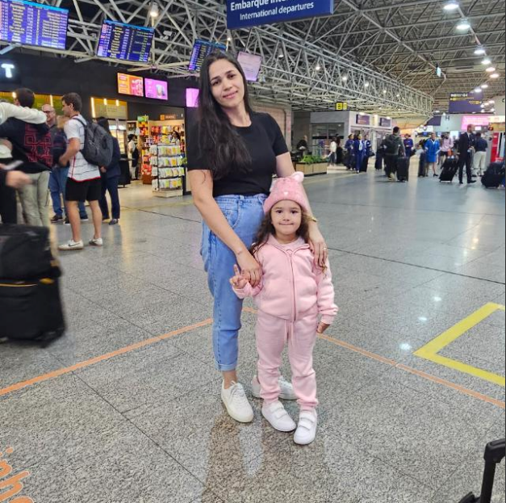

Mural das Donas
Essas são as mãos e os corações por trás de cada pote cheio de sabor.


Tudo começou com três mulheres incríveis — que decidiram transformar a rotina em algo mais doce. Unidas pela amizade, família e talento na cozinha, elas começaram a fazer bolos com o objetivo de vender e conquistar sua independência, espalhando amor em cada pote.
O que era apenas uma tentativa de sair da mesmice virou um negócio cheio de sabor, carinho e propósito. Hoje, a Delícias Batista representa mais do que sobremesas: representa força, união e o verdadeiro gosto de um sonho feito à mão.
Experimente você também e sinta o sabor de uma história feita com o coração. 💗
Essas são as mãos e os corações por trás de cada pote cheio de sabor.
Camadas generosas com brigadeiro. R$ 10,00
Leve e fresco com pedaços naturais. R$ 12,00
Sabor suave e equilibrado. R$ 12,00